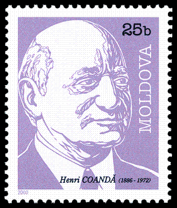

Henri Coanda
Biografie
Henri Coandă s-a născut la București la 7 iunie 1886, fiind al doilea copil al unei familii numeroase. Tatăl lui a fost generalul Constantin Coandă, fost profesor de matematică la Școala națională de poduri și șosele din București și fost prim-ministru al României pentru o scurtă perioadă de timp în 1918. Mama sa, Aida Danet, a fost fiica medicului francez Gustave Danet, originar din Bretania.
Încă din copilărie viitorul inginer și fizician era fascinat de miracolul vântului, după își va și aminti mai târziu. Henri Coandă a fost mai întâi elev al Școlii Petrache Poenaru din București, apoi al Liceului Sf. Sava 1896 unde a urmat primele 3 clase, după care, la 13 ani, a fost trimis de tatăl său, care voia să-l îndrume spre cariera militară, la Liceul Militar din Iași 1899. Termină liceul în 1903 primind gradul de sergent major și își continuă studiile la Școala de ofițeri de artilerie, geniu și marină din București.
Detașat la un regiment de artilerie de câmp din Germania 1904, este trimis la Technische Hochschule (Universitatea Technică) din Berlin-Charlottenburg. Pasionat de probleme tehnice și mai ales de tehnica aviaticii, în 1905 Coandă construiește un avion-rachetă pentru armata română. Între 1907-1908 a urmat de asemenea cursuri universitare în Belgia, la Liège, și la Institutul tehnic Montefiore. În 1908 se întoarce în țară și e încadrat ofițer activ în Regimentul 2 de artilerie. Datorită firii sale și spiritului inventiv care nu se împăcau cu disciplina militară, el a cerut și obținut aprobarea de a părăsi armata, după care, profitând de libertatea recâștigată, a întreprins o lungă călătorie cu automobilul pe ruta Isfahan – Teheran – Tibet. La întoarcere pleacă în Franța și se înscrie la Școala superioară de aeronautică și construcții, nou înființată la Paris 1909, al cărei absolvent devine în anul următor 1910, ca șef al primei promoții de ingineri aeronautici.
Cu sprijinul inginerului Gustave Eiffel și savantului Paul Painlevé, care l-au ajutat să obțină aprobările necesare, Henri Coandă a efectuat experimentele aerodinamice prealabile și a construit în atelierul de carosaj al lui Joachim Caproni primul avion cu propulsie reactivă de fapt un avion cu reacție, fără elice, numit convențional Coandă-1910, pe care l-a prezentat la al doilea Salon internațional aeronautic de la Paris 1910.
Coandă a susținut după 1956 că în timpul unei încercări de zbor din decembrie 1910, pe aeroportul Issy-les-Moulineaux de lângă Paris, aparatul a scăpat de sub control din cauza lipsei lui de experiență, s-a lovit de un zid de la marginea terenului de decolare și a luat foc. Deocamdată nu au fost găsite surse contemporane evenimentului care să coroboreze această narațiune.
Între 1911-1914 Henri Coandă a lucrat ca director tehnic la Uzinele de aviație din Bristol, Anglia și a construit avioane cu elice de mare performanță, de concepție proprie. În următorii ani se întoarce în Franța, unde a construit un avion de recunoaștere 1916 foarte apreciat în epocă, prima sanie-automobil propulsată de un motor cu reacție, primul tren aerodinamic din lume și altele. În 1934 obține un brevet de invenție francez pentru Procedeu și dispozitiv pentru devierea unui curent de fluid ce pătrunde într-un alt fluid, care se referă la fenomenul numit astăzi „Efectul Coandă”, constând în devierea unui jet de fluid care curge de-a lungul unui perete convex. Această descoperire l-a condus la importante cercetări aplicative privind hipersustentația aerodinelor, realizarea unor atenuatoare de sunet și altele.
Henri Coandă revine definitiv în țară în 1969 ca director al Institutului de creație științifică și tehnică (INCREST), iar în anul următor, 1970, devine membru al Academiei Române. Henri Coandă moare la București, pe data de 25 noiembrie 1972, la vârsta de 86 de ani.

Invenții și descoperiri
- Dispozitiv pentru măsurători de portanță și rezistență la deplasarea în aer a diferitelor tipuri de suprafețe portante (profile de aripă) cu posibilitatea înregistrării valorilor pe diagrame pentru posibilitatea comparației și stabilirii profilului ideal. Dispozitivul era montat pe un vagon în fața unei locomotive, iar experimentele se desfășurau în mișcare, la o viteză de 90 km/h, pe linia Paris-Saint Quentin. Ulterior a putut face aceste determinări folosind un tunel de vânt cu fum, și o cameră fotografică specială, de concepție proprie. Datorită acestor experimente a stabilit un profil de aripă funcțional pentru viitoarele sale aparate de zbor.
- 1911: În Reims, Henri Coandă prezintă un aparat de zbor cu două motoare cuplate ce acționau o singură elice.
- 1911-1914: În calitatea sa de director tehnic al Uzinelor Bristol, Henri Coandă proiectează mai multe aparate de zbor “clasice” (cu elice) cunoscute sub numele de Bristol-Coandă. În 1912 unul dintre ele câștigă premiul întâi la Concursul internațional al aviației militare din Anglia.
- 1914-1918: Henri Coandă lucrează la “Saint-Chamond” și “SIA-Delaunay-Belleville” din Saint Denis. În această perioadă proiectează trei tipuri de aeronave, dintre care cel mai cunoscut este Coandă-1916, cu două elici apropiate de coada aparatului. Coandă-1916 este asemănător cu avionul de transport Caravelle, la proiectarea căruia de fapt a și participat.
- Invenția unui nou material de construcție, beton-lemnul, folosit pentru decorațiuni (de exemplu la Palatul culturii din Iași, ridicat în 1926, decorat în totalitate cu materialul lui H. Coandă)
- 1926: În România, Henri Coandă pune la punct un dispozitiv de detecție a lichidelor în sol. E folosit în prospectarea petroliferă.
- În Golful Persic inventatorul român construiește un rezervor din beton subacvatic pentru depozitarea petrolului.
- “Efectul Coandă“. Primele observații le face cu ocazia studierii primului avion cu reacție din lume, Coandă 1910. După ce avionul decola, Henri Coandă observă că flăcările și gazul incandescent ieșite din reactoare tindeau a rămâne pe lângă fuzelaj. Abia după 20 de ani de studii ale lui și ale altor savanți, inginerul român a formulat principiul din spatele așa-numitului efect Coandă, numit astfel de profesorul Albert Metral. La baza efectului Coandă, a stat construirea aerodinei lenticulare, un aparat în formă de lentilă.
Filatelie
- În 1978, cu prilejul Zilei aviației, Poșta Română a pus în circulație o marcă poștală cu valoarea de 10 lei care reprezintă portretul lui Henri Coandă, avionul creat de acesta în 1910, precum și data de 16 decembrie 1910, când acesta a reușit primul zbor cu un avion dotat cu motor cu reacție.
-În 1986, Poșta Română a pus în circulație o marcă poștală cu valoarea nominală de 2 lei, care reprezintă portretul lui Henri Coandă.
- În anul 2000, serviciile poștale ale Republicii Moldova au pus ăn circulație o marcă poștală cu valoarea nominală de 25 de bani, care reprezintă portretul lui Henri Coandă.
Numismatica
- La 10 august 2001, Banca Națională a României a pus în circulație o emisiune comemorativă de trei monede de argint, dedicată unor pionieri ai aviației românești, Traian Vuia, Henri Coandă și Elie Carafoli. Fiecare din cele trei monede au valoarea nominală de 50 de lei, au titlul de 999‰, cântăresc câte 15,551 grame, au formă octogonală, iar raza cercului circumscris este de 14,5 mm, fiind emise de calitate proof într-un tiraj de câte 500 de exemplare. Marginea monedelor este netedă.
- La 11 octombrie 2010, cu prilejul împlinirii a 100 de ani de la primul zbor, în lume, a unui aparat de zbor cu reacție creat de Henri Coandă, Banca Națională a României a pus în circulație, cu scop numismatic, o monedă de argint, comemorativă, într-un tiraj de 1.000 de exemplare, cu valoarea nominală de 10 lei. Moneda este rotundă, are diametrul de 37 mm, este realizată din argint având titlul de 999‰, de calitate proof și are greutatea de 31,103 g. Marginea monedei este zimțată. «Monedele din argint, din emisiunea numismatică „Aniversarea a 100 de ani de la construirea primului aparat de zbor cu reacție de către Henri Coandă”, au putere circulatorie pe teritoriul României.»
Dispozitiv pentru mărirea portanţei pe profilul de aripă al aparatului cu reacţie realizat în 1910
Coandă-1910 airplane with the turbo-propulseur on separate display
1912 Bristol-Coanda monoplane
Marcă poștală românească cu Henri Coandă tânăr, emis de ziua aviației 1978

Marcă poştală moldovenescă cu Henri Coandă vârstnic, emisă în anul 2000